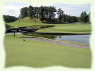
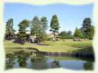
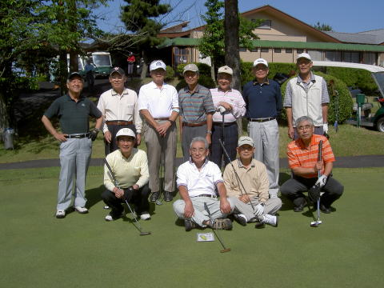
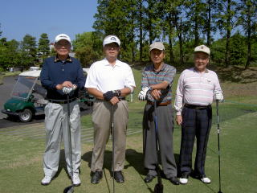
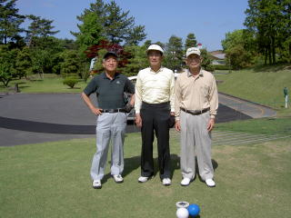
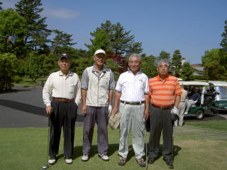
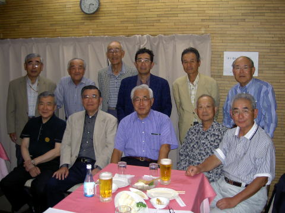

横浜国立大学工学部第四寮
第３回弘南寮ゴルフ大会
本千葉カントリークラブ
|  |  |  |
|
| 蘇我駅前で集合した面々 | |||
| 左から 伊勢本、久米、嵐、野村、村上、高石、中村、高橋、（敬称略） |
| 第３回弘南寮ゴルフ大会が、平成１９年５月２１日（月）、総員１１名の参加を得て、本千葉カントリークラブ にて開催された。 （山之内さんが急病の為欠席されたのは残念でした） 当日は快晴無風の、願っても無い絶好のゴルフ日和、日頃の心がけの良い人ばかりのようです。 |
|  | 前列左から 高橋千穐 中野 宏 高石周志 野村慎一 |
後列左から 猪原暉雄 稲田浩一 嵐 雅彦 伊勢本幸雄 村上処直 中村茂之 久米範佳 |
| 第１組 | 第２組 | 第３組 |
|  |  |  |
当日の成績 ：
ベストグロス 中野 宏 ３８−４５= 83
ダブルペリア
優勝 中野 宏 グロス ８３ ネット ７４．６
準優勝 中村茂之 ９０ ７５．６
同 稲田浩一 ９０ ７５．６
|  | 前列左から 村上処直 ３５建築 中村茂之 ３４造船 嵐雅彦 ３４電化 高石周志 ３６電工 中野宏 ３８機械 |
後列左から 野村慎一 ４０電 猪原暉雄 ３７造船 久米範佳 ３８造船 高橋千穐 ３７応化 伊勢本幸雄 ３５造船 稲田浩一 ３８電工 |
今回の大会は38年造船の久米さんが幹事役で、お骨折りいただきました。
ゲームの方の主役は中野さんでした。それにしても半チャン ３８ のスコアは立派でしたね。
弘南寮会としての行事として、唯一活動しているゴルフ会は、
第一回大会 平成１８年 ５月１２日（金） 参加者 ６名
第二回大会 平成１８年１０月２０日（金） 参加者 ８名
第三回大会 平成１９年 ５月２１日（月） 参加者 11名
と、会を追う毎に参加者が増え、賑やかになってきました。
現役時代にゴルフをやられた方はもっと大勢おられる筈、次回は更に大勢の参加を期待しております。
次回は 11月初旬 〜 中旬頃、伊勢本さんの幹事で湯河原方面で開催されることになりました。
詳細は追って伊勢本さんの方から発表されますので、ご期待下さい。 （文責 猪原）